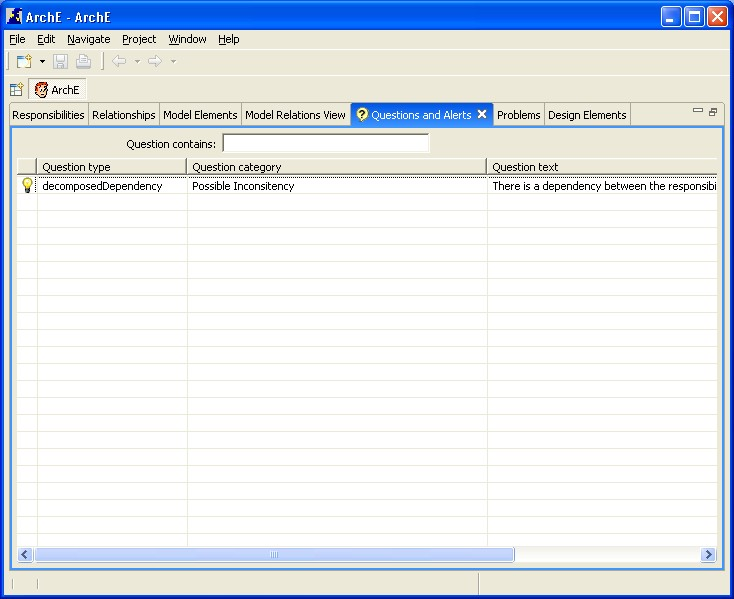

This tutorial will help you to understand the questions and alerts view.
To open of the questions/alerts being displayed,
simply double-click the row or select Edit from the popup menu. The
dialog box used to answer a question will pop up.

This tutorial briefly introduced you to all functionalities related to
the Questions and Alerts View.